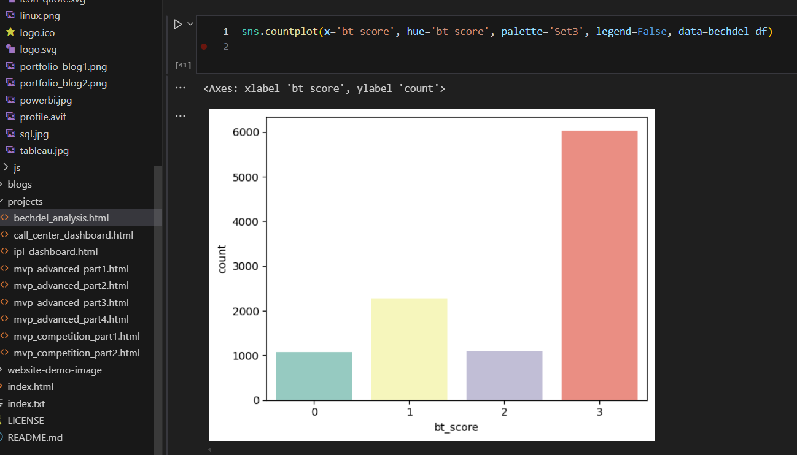

To analyze gender representation in films through the lens of the Bechdel Test, and correlate
test outcomes
with key commercial and critical metrics such as revenue, genre, and IMDb ratings. The
analysis focuses on
films released between 1900 and 2015.

Bar chart showing
counts of each
score (0 to 3)
🧠 Project Overview
The Bechdel Test is a simple but powerful tool used to assess the representation of women in
films. A
movie passes the test if it meets three criteria:
It has at least two named women characters,
who talk to each other,
about something other than a man.
This project explores how films released between 1900 and 2015 perform on the Bechdel Test
and
investigates whether gender representation has any relationship with movie success factors
such as
revenue, budget, genre, vote count, and ratings.
Data Sources & Justification
For this analysis, I opted for a smaller, well-structured movie dataset rather than the
full IMDb
datasets. While IMDb offers comprehensive coverage, its large size and highly normalized
format require
extensive preprocessing and significant computing resources.
The alternative dataset provided the necessary attributes—such as title, year, genre,
runtime, and
ratings—without the overhead. This allowed for a more efficient workflow and seamless
integration with
Bechdel Test data to focus on meaningful insights.
While the dataset only includes movies up to 2015, it was sufficient for deriving
meaningful insights on
gender representation in film.